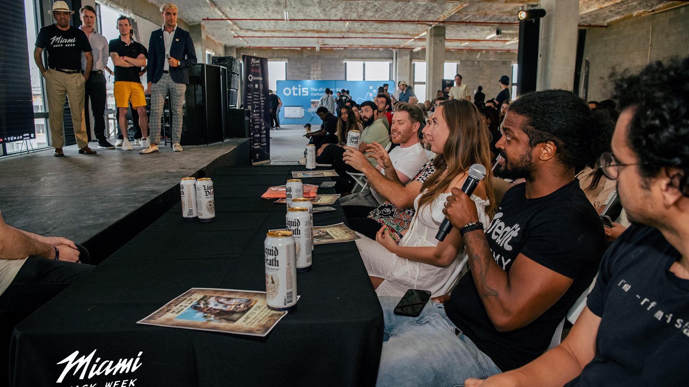
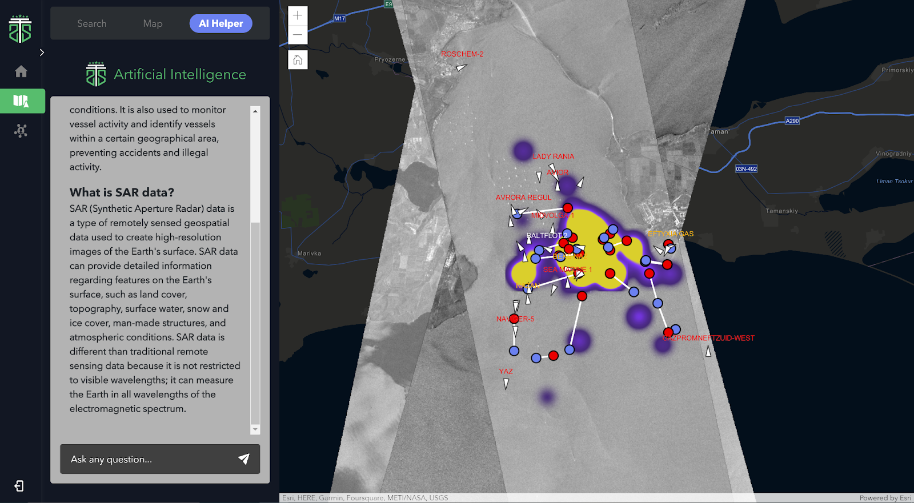
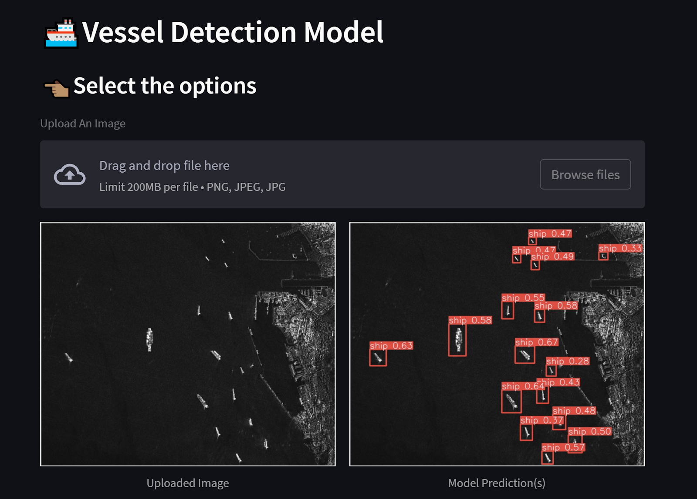
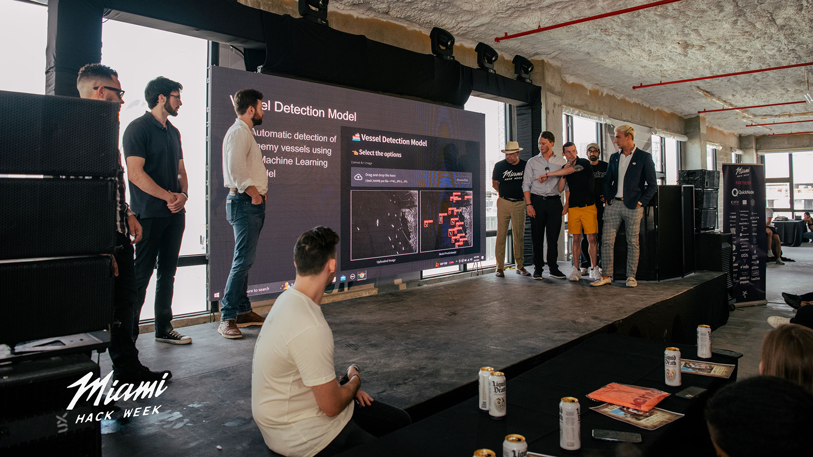
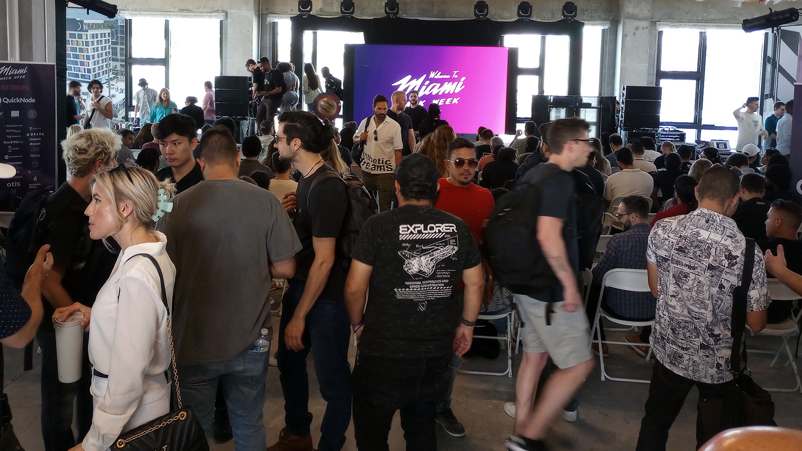

Space-Chat
View our Space Chat Presentation.
Summary
Illicit oil tanker trade violates international sanctions and is a large problem which imposes huge economic and societal costs.
In order to provide intelligence for government agencies, hedge funds, etc. we created SpaceChat. We used a variety of data sources to track oil tanker locations. Next, we integrated ChatGPT capabilities so that a user can make natural language queries about tanker location and determine potential illicit activity.
The purpose for the integration is so that the AI can learn based on the data we fed it. This goes far beyond the typical user interface most users are familiar with. The limitation with using the baseline ChatGPT is that the AI can only make determinations based on the data it has, and integration with these premium data sources for tanker location is not included. Additionally, we used proprietary backend logic to integrate multiple sources for natural language queries.

What it does
SpaceChat integrates ChatGPT into an online dashboard, allowing users to ask questions about oil tanker locations, illicit activity, and other information to try and uncover illegal oil trade.
This allows humans to immediately interact with complex data via natural language so actions can be taken against the owners of these tankers in real time.

Integration of ChatGPT to interactive heatmap for tankers

How we built it
SpaceChat was built by integrating OpenAI's language model ChatGPT into an online webpage dashboard with an up to date embedded vector database. This allows for users to ask natural language questions about oil tanker information and its owners, including location, ship type, and frequency to uncover potential illegal oil trade activity. Additional data sources and functionality were also integrated into the platform to enhance its capabilities.
Challenges we ran into
We identified 3 data sources that could provide valuable insight to ChatGPT so that a user could ask targeted questions about tankers and their region or travel.
These 3 data sources needed to be correlated then merged into a single database and imported into our vector database. This presented a challenge in determining which types of questions could be answered based on how the database information is structured. Integrating priority on the databases was also an area that we had to focus on fine tuning since OpenAI already has their own data set that is outdated.
Accomplishments
We are most proud that the tool we built can better help uncover illegal oil and potentially arms transactions by sanctioned countries which causes real economic and other damages.
Additionally, we built a machine learning algorithm that after training, was able to highlight ships in red for automatic detection of enemy vessels.

Automatic detection of enemy vessels using a Machine Learning model
What we learned
Creating a product that integrates multiple data sources and provides relevant information to users in a conversational manner was a learning experience in several areas including:
- Data engineering: merging and cleaning multiple data sources into a unified database
- Natural language processing: understanding the intent and context of user queries
- User experience: creating a user-friendly interface for asking and receiving information
The Future of SpaceChat
SpaceChat will become more valuable as it continues to learn. Future use cases include:
- Government agencies — Use SpaceChat for enforcement
- Hedge funds — Make trading decisions
- Illegal oil trade — Estimates based on data
- Report generation — Create automatic reports around illicit activity
- Arms trade — Addition of illegal firearms trade
- Data sources — Add additional intelligence
- Fine tuning — Tune the AI model for increased accuracy
